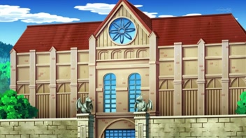
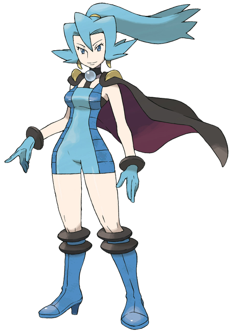
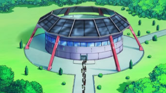
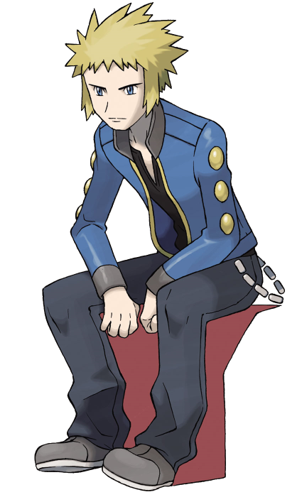

Gimnasio de Ciudad Endrino


Este gimnasio se encuentra ubicado en la región de Jotho es custodiado por la líder Debora, la cual se especializa en pokémon del tipo dragón, algunos de ellos son: Kingdra, Dragoner y Dragonite. Al vencerla en un combate, obtienes la medalla Dragón.
Gimnasio de Ciudad Marina


El líder de este gimnasio es Lectro, este se especializa en pokémon del tipo eléctrico como: Raichu, Electrivire y Luxray, pertenece a la región de Sinnoh. Es uno de los gimnasios más desafiantes para cualquier entrenador, al ganar en batalla obtienes la medalla Faro